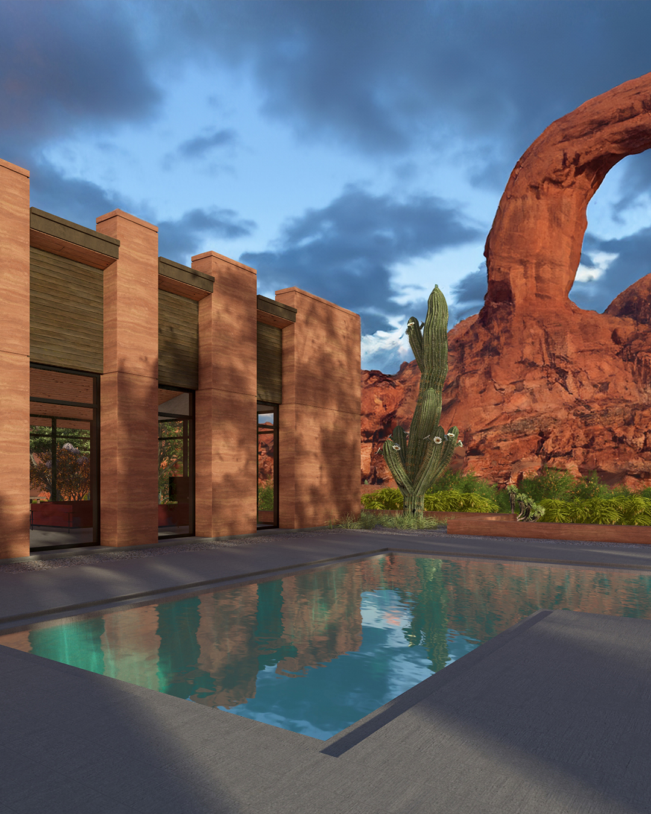
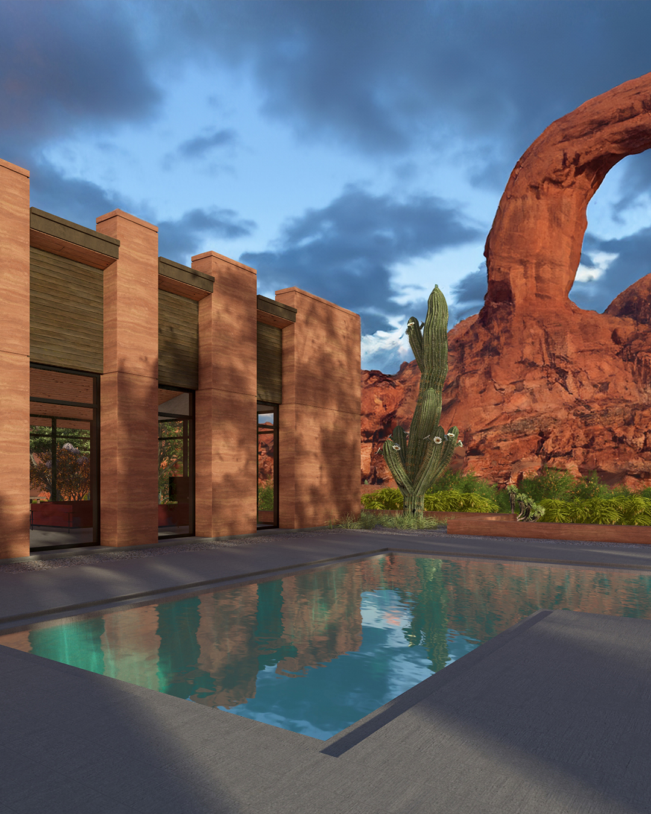

A residence situated somewhere within the American West. This project was the development of a small house with the purpose of producing a set of plans that were well enough put together and detailed enough that could be approved for a permit.
The overall class was used as a tool to teach students the basics of 3D modeling software, Revit, and architectural drawing production. Going into the class a few students, including myself, had some form of Revit experience. For us, we were challenged to complete a larger scale project, for every drawing a typical student did, we did twice that.

For my project, I took on an additional challenge of implementing rammed earth exterior walls into my project. This allowed me the opportunity to study assembly details where rammed earth walls met typical wood framing..

 
